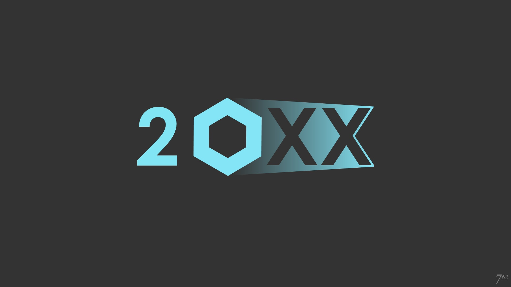

Why is it important to Practice?
Practice makes perfect as the common saying goes, and two top players of Melee took that to heart in order to reach the level they are at today. One of these players was one of the Five gods of Melee, Mew2King. There is a video that shows him practicing in his sleep, that is how much time he spent playing the game. Here is a link to the video.
Mew2King was not the only player that become a top player by practicing a ton. Moky, a top Fox player, came into the scene as a competitor in 2017 and started to place in top 8 at locals. A year after, he started to enter more Super Major's and was competiting for top 32 and always was placing in the top 64 out of hundreds of attendees. For information on how Moky became a top player, here is an article by Red Bull Gaming describing how he became good by "not playing top players".
What are the Ways to Practice
The best way to practice is to use a modpack called 20XX. This modpack creates tools in Melee that allow you to practice specific techniques and create AI to help you practice certain moves. Along with that, the games lets you modify the rules so sheilds do not shrink, you can find out when you miss L-canccels, can show the hitboxes of characters, and you can create save states. This tool is only available on Dolphin Emulator version of SSBM. Here is the link to the website where you can download this mod.
Another helpful tool to practice SSBM is to use Slippi Netplay to play against other people online. This game used to not have online play, but when Dolpinh Emulator was released, there was a way to play online against other players with Dolphin. This was called netplay and was the best way for many years to play agaisnt others online. However, the best method now is to use Slippi emulator which provides rollback and the ability to que up to play. Slippi is easy to set up and is fast to get into matches against other players. If you are needing experience against other players, this is the best resource to use. Link here.